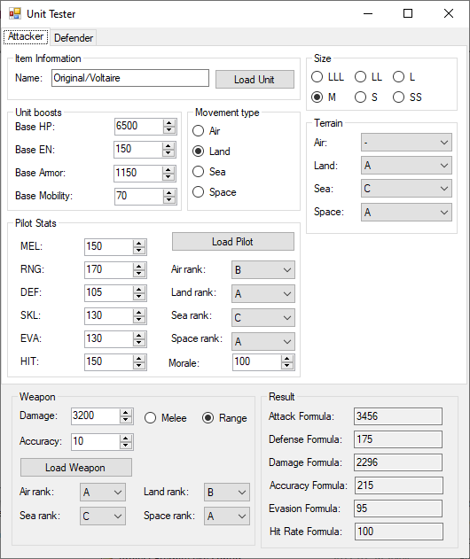

Unit Tester Editor
 Before starting to make units it is good to be aware of the unit tester as it is the easiest and fastest way to balance your units and pilots.
You can load units, pilots and attacks to fill the fields but you can also fill them manually. The Damage Formula is the final damage dealt and Hit Rate Formula the final chances of the attack hitting.